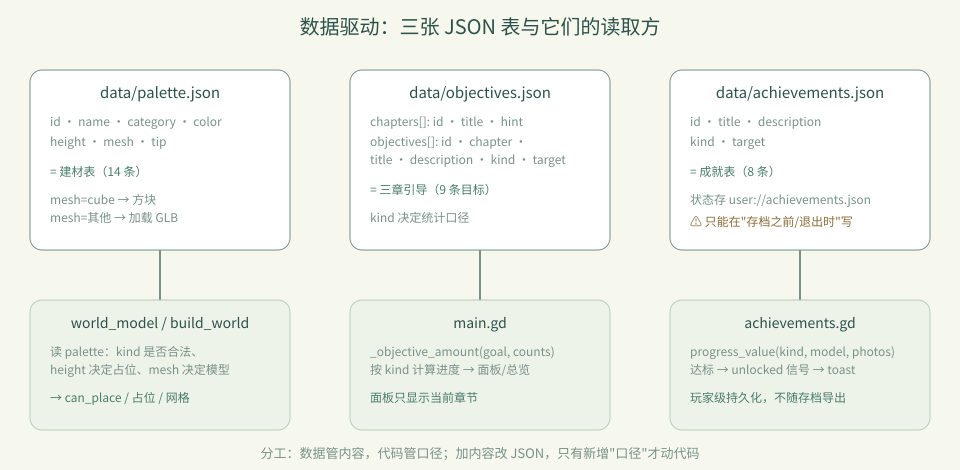
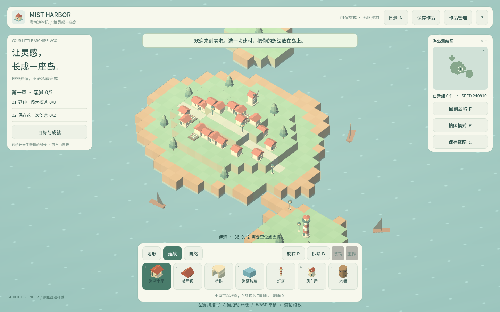
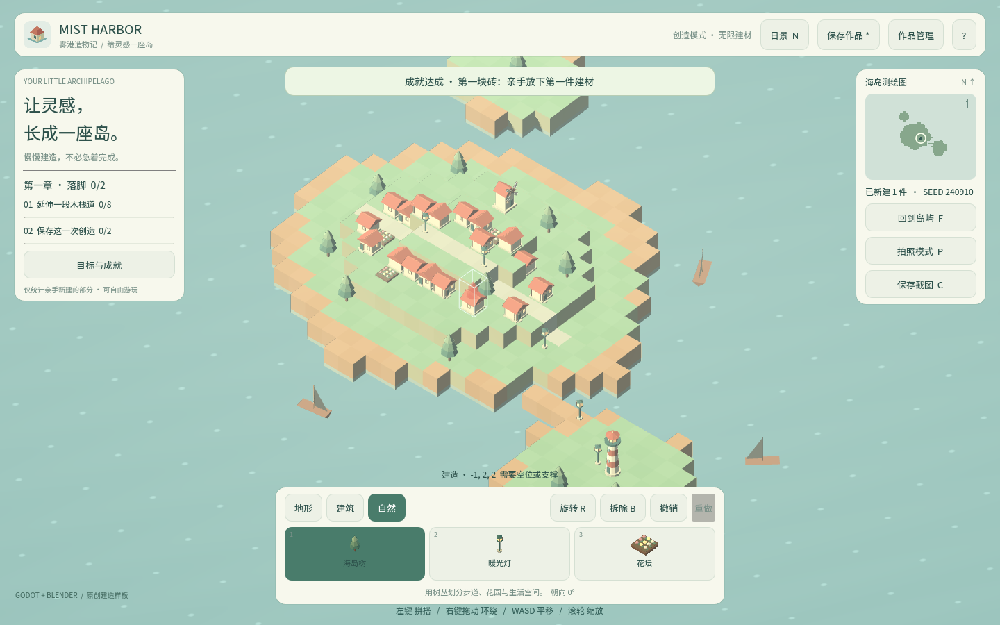
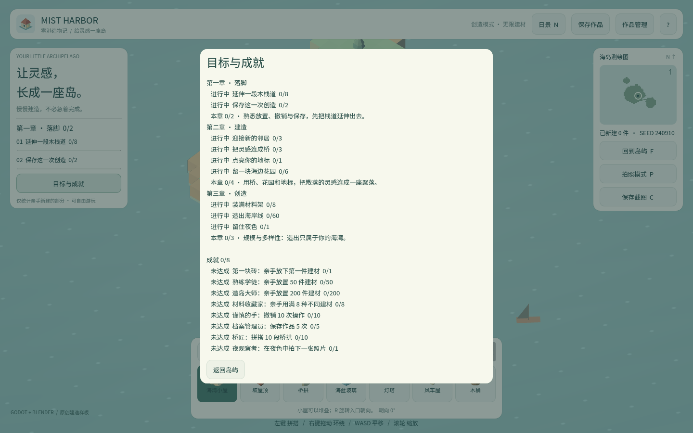

卷 1 · 第 07 章 数据驱动：三张 JSON 表撑起全部内容
本章目标：掌握
palette/objectives/achievements三张表的字段与扩展方式——
从此加内容不用改代码，只改 JSON（外加一条命令）。
对应任务：T21 / T22 | 对应文件：project/data/*.json
7.1 为什么要数据驱动
对比两种加法：
| 硬编码 | 数据驱动（本实训） | |
|---|---|---|
| --- | --- | --- |
| 加一件建材 | 改 GDScript 数组、改 UI 分支、改图标 switch | 加一条 JSON + 跑一条命令 |
| 加一个目标 | 改 UI 列表、改统计逻辑 | 加一条 JSON（若 kind 已有统计口径） |
| 加一项成就 | 写代码判断 + 存状态 | 加一条 JSON（若 kind 已有统计口径） |
代价：统计口径（kind 的含义）仍写在代码里（main.gd 的 _objective_amount、achievements.gd 的 progress_value）。所以新增"全新口径"时才需要动代码——
这是有意的分工：数据管内容，代码管口径。

7.2 palette.json：建材表
{"id":"barrel","name":"木桶","category":"建筑","color":"b07d4f",
"height":1,"mesh":"barrel","tip":"码头边的橡木桶，可以一只只堆起来。"}| 字段 | 含义 | 注意 |
|---|---|---|
| --- | --- | --- |
id | 唯一键 | 同时是 mesh 默认名与 GLB 文件名 |
name | 中文名 | 改中文后要跑字体工具（T28） |
category | 地形 / 建筑 / 自然 | 决定它出现在哪个分类页 |
color | UI 色块（6 位 hex，不带 #） | 用于手绘图标与选中态 |
height | 占几格 | 影响放置校验与撤销；改了要重跑测试 |
mesh | "cube" = 用方块；其他 = 加载 assets/models/<mesh>.glb | 决定会不会进 GLB 缩略图流程 |
tip | 选中时底部提示 | 同样是中文，受字体子集影响 |
加一件建材的完整流程（四步，零 GDScript 改动）：
1. 写建模脚本 tools/art/xxx.py
2. 跑管线 python tools/asset_pipeline.py build --id xxx --name 名字 --category 建筑
3. 自动完成 GLB → manifest → Godot 导入 → 写入 palette（保留原位、只覆盖传参的字段）
4. 验证 python tools/dev.py test图标不用管：
model_thumbnail.gd会在运行时渲染 GLB 当图标。
7.3 objectives.json：章节与目标（schema_version 2）
{"chapters":[{"id":1,"title":"第一章 · 落脚","hint":"熟悉放置、撤销与保存..."}],
"objectives":[{"id":"boardwalk","chapter":1,"title":"延伸一段木栈道",
"description":"亲手放置 8 块木栈道","kind":"wood","target":8}]}kind 就是统计口径，目前有这些：
| kind | 含义 |
|---|---|
| --- | --- |
"wood" / "cottage" / "arch" / "beacon" … | 该类建材的玩家放置数 |
"garden" | min(3, tree) + min(3, flower) |
"journal" | min(1, 保存次数) + min(1, 撤销次数) |
"variety" | 用过的不同建材种类数 |
"total" | 玩家放置总数 |
"night_photo" | 夜景截图次数 |
新增目标时：有现成 kind → 只加 JSON；需要新口径 → 在 main.gd 的 _objective_amount
里加一个分支，并补一条断言。
面板只显示当前章节（2–4 条），完整进度在「目标与成就」——这是刻意的密度控制（见第 08 章）。
7.4 achievements.json：成就表
{"id":"night_owl","title":"夜观察者","description":"在夜色中拍下一张照片",
"kind":"night_photo","target":1}与目标的差别只有两点：
- 持久化位置不同：成就存
user://achievements.json，属于玩家，不属于作品，
不随存档槽导出；目标进度则来自当前世界状态
- 落盘时机有讲究：见下方"Web 写盘顺序"这个真实事故
⚠️ 真实事故（必读）：Web 端
user://是异步写入 IndexedDB 的。
本实训曾出现"成就文件在存档之后写，导致整份存档丢失"。
现在的规则是：成就只在"存档之前"和"退出时"落盘（main.gd里achievements.flush()
在model.save_slot()之前调用），绝不在自己的定时器里写。
🌩 在云端 agent（web-cb）里是什么样
| 🖥 本地路线 | 🌩 云端 agent（web-cb） | |
|---|---|---|
| --- | --- | --- |
| 改 JSON | 改文件后跑 dev.py test | 一样的操作；平台可能提供校验预览（JSON schema / 断言提示） |
| 加建材 | 自己跑 asset_pipeline.py build | 同一条命令，产物落在平台工作区 |
| 持久化差异 | 写本地磁盘，行为可预测 | 云端预览环境同样是 Web 运行时，IndexedDB 写盘顺序的坑完全一样存在 |
| 排错 | 本地复现 | 先用 dev.py test 排除逻辑，再查运行时（写盘/预览） |
🌩 提醒：不要因为"在云端"就以为没有 Web 运行时的坑——
云端预览往往正是 Web 导出，第 7.4 的写盘顺序问题在那里同样会发生。
7.5 常见坑速查（本章）
| 现象 | 原因 | 处理 |
|---|---|---|
| --- | --- | --- |
| 加了建材但游戏里没有 | 只改了 JSON，没放 GLB | 跑 asset_pipeline.py build |
| 改中文后出现方框 | 子集字体缺字 | 跑 build_font_corpus.py |
改 height 后穿模/测试红 | 占位与断言不一致 | 改完必跑测试 |
| 面板顺序变了 | 注册逻辑曾把条目移到分类末尾 | 现状：已存在条目保留原位 |
| Web 上存档丢失 | 第二个文件在存档之后写 | 见 7.4：把其他写盘放在存档之前 |
7.6 本章作业
- 加一件"新分类外"的建材：写脚本 → 跑管线 → 跑测试（可先从复制
barrel.py改名开始） - 给第三章加一条目标（用现成
kind，例如total: 80），跑测试确认面板显示变化 - 加一项成就（用现成
kind），并验证它只解锁一次（重进不重复弹） - 回答：目标进度与成就状态分别存在哪里？为什么这么分？
🎓 教学提示（给教师 / 直播主）
- 概念锚点：数据管内容，代码管口径。这条边界讲清了，学生就不会乱改代码。
- 课堂演示：现场加一条目标（
total: 80），刷新看面板变化——30 秒见效，很有说服力。 - 高频误解：学生以为"数据驱动 = 什么都不用改代码"。用
kind的例子说明边界在哪。 - 压轴案例：7.4 的"Web 写盘顺序导致丢存档"——这是本实训最有教学价值的真实事故，
建议整段讲（它同时涉及运行时、持久化、验证三条线）。
- 批改要点：作业 4 必须答出"成就属于玩家、目标属于作品"。
🖼 本章图集



📹 录屏分镜（9 分钟）
| 时间 | 画面 | 解说词要点 |
|---|---|---|
| --- | --- | --- |
| 00:00–01:20 | 硬编码 vs 数据驱动 对比 | "加内容不该改代码。" |
| 01:20–03:00 | palette 字段表 + 加建材四步 | "一条命令，从脚本到可放置。" |
| 03:00–04:40 | objectives 的 kind 口径表 | "数据管内容，代码管口径。" |
| 04:40–06:20 | Web 写盘顺序事故复盘 | "存档之后再写别的文件，存档会丢。" |
| 06:20–08:00 | 现场加一条目标看面板变化 | "30 秒见效，这就是数据驱动的价值。" |
| 08:00–09:00 | 作业 + 预告（观感设计） |
🎬 视频位（待录制）
把录好的视频放到course/media/video/07/（mp4 / webm / mov），重新执行 python tools/course_build.py 即会自动内嵌；首帧默认用本章第一张截图作为封面。分镜脚本见上一节。🖼 配图清单
| 文件名 | 内容 | 生成方式 |
|---|---|---|
| --- | --- | --- |
07-dock-building.png | 建筑分类建材栏全貌（数据渲染结果） | python tools/course_capture.py --chapter 07 |
07-progress-panel.png | 目标与成就面板 | 同上 |
07-place-tree.png | 放置一棵树（触发目标统计） | 同上 |
🎥 直播脚本（L5 片段，12 分钟）
- 开场投票："加一件建材，你觉得要改几个文件？"（多数人会高估）
- 演示：现场四步加一件建材 + 现场加一条目标
- 事故复盘：7.4 的写盘顺序（可用"先存档 vs 先写成就"两版对比演示）
- 收尾：强调"数据驱动也有边界"
❓ 本章 FAQ
Q：能不能再加一个分类（比如"装饰"）？
A：可以，但要同步 UI：main.gd 里分类按钮是硬编码的三个。这是本实训明确的"代码侧"边界。
Q：成就能不能按作品存档？
A：现状是按玩家存（user://achievements.json）。若要按作品，需要改存储位置与导出逻辑。
Q：objectives 的 schema_version 从 1 升到 2，旧存档会坏吗？
A：不会——schema_version 是存档格式的版本，与 objectives.json 的字段无关；
但课件若沿用旧格式，chapters 缺失时面板会退化（这也是要跑测试的原因）。